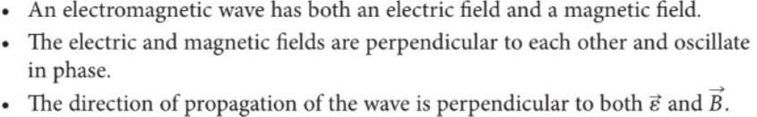

Electromagnetic Radiation
Callout
In physics, electromagnetic radiation (EM radiation or EMR) refers to the waves (or their quanta, photons) of the electromagnetic field, propagating (radiating) through space, carrying electromagnetic radiant energy. It includes radio waves, microwaves, infrared, (visible) light, ultraviolet, X-rays, and gamma rays.

Many physicists wondered if the reverse were possible, whether an electric field by itself could produce a magnetic field. Scottish physicist and mathematician James Clerk Maxwell hypothesized that this was possible.

Maxwell expressed his theory of electromagnetism in four equations, generally called Maxwell’s equations.
The key ideas that his equations express are the following:
• Electric charges in space produce an electric field, and currents produce a magnetic field.
• Magnetic field lines form continuous closed loops that have neither a beginning nor an end. Electric field lines always begin and end on charges.
• A changing electric field produces a magnetic field.
• A changing magnetic field produces an electric field.
Three Central Properties of Electromagnetic Waves

Callout
Electromagnetic Spectrum

In this diagram of the electromagnetic spectrum, wavelength increases from top to bottom and frequency increases from bottom to top. However, this is arbitrary. Some diagrams of the electromagnetic spectrum show the opposite.
Watch this video:
Practice
The human eye is most sensitive to light with a wavelength of about 550 nm. Calculate this light’s frequency.